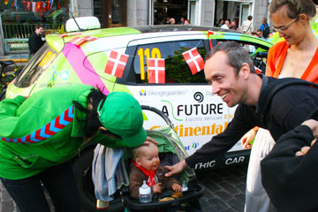
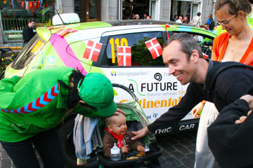

Starting from Denmark, June 25, 2010 adventurers Hjalte Tin and Nina Tin Rasmussen have crossed Denmark, Norway, Sweden, Estonia, Russia, Mongolia, China, USA, Spain, France, Switzerland, the Netherlands, Poland and Germany. They completed the record-setting round the world tour on May 7, 2011. Arriving as planned in Copenhagen, the Moto Mundo team was greeted at the city hall at a welcome event arranged by the Electro-mobility Technology Organization, E-TO; a new association founded in Denmark to support and finance development of electric vehicles and electric motorsport.
They drove a Qashqai Electric developed and produced by AfutureEV in Denmark. The car is 100% electric. The Moto Mundo World Electric Tour was the ultimate test of electric car range, durability and performance. The World Electric Tour have encountered extreme conditions from endless Siberian highways, Gobi-desert heat, wild traffic in China and freezing US winter. Highlights of the tour have been joining the EXPO 2010 in Shanghai, the Motor Show in Detroit and finishing 8 in the Monte Carlo Rally for electric cars.
MichaelThwaite avatar Michael Thwaite Posted: 5/17/2011 1:37pm PDT
I love road trips! Battling against the odds is what it's all about. Why would you climb a mountain when there are perfectly good helicopters? Why would you take an EV round the world when there are perfectly good Toyota Landcruisers? Easy; EV's do everything else better than old fashioned cars but range is still the challenge, everyone knows that, but a challenge is a challenge & who's going to back away from that?
MOTO MUNDO ELECTRIC WORLD TOUR: 30.000 KM IN 10 MONTHS 100% ELECTRIC
NINA AND HJALTE TIN FROM DENMARK ARE THE FIRST TO DRIVE AN ELECTRIC CAR ROUND THE WORLD.
The world tour was completed on May 7, 2011 when Nina Rasmussen and Hjalte Tin returned to Copenhagen and became the first to drive a full-size, production electric car round the world. The expedition left Copenhagen June 25, 2010. The Danish Minister of Climate and Energy drove the first kilometers and welcomed Nina and Hjalte back to Copenhagen 10 months later. Nina and Hjalte has done 30.000 km in 10 months and crossed Denmark, Norway, Sweden, Estonia, Russia, Mongolia, China, USA, Spain, France, Switzerland, Germany, Poland and Holland.
Nina and Hjalte are well-known travelers and writers in Denmark with more than 15 books published about their journeys to most parts of the world. Electric cars are something they try for the first time.
Hjalte says: “We do this to promote green mobility. The world needs to make the leap beyond oil. Electric cars will be important everywhere to help stop climate change.”
Nina ads: “To be the first to drive an electric car round the world was a great adventure. Everywhere we met people caring for the future of our planet and they were enthusiastic about electric cars. They have heard about them, but not seen one in real life. The curiosity was endless.”
The expedition was a real test. No support car took care of problems or carried spare-parts. Finding places to charge the car proved to be a big challenge. Workshops, hotels, camp-grounds and homes all over the world have helped the Moto Mundo Electric World Tour with power.
The expedition encountered extreme heat in Russia and the coldest winter in USA. Nina and Hjalte are the first to cross the Gobi desert in an electric vehicle. En route they completed the Monte Carlo Rally for electric cars and exhibited the car at the Shanghai 2010 EXPO world exhibition and in Detroit at the largest motor-show in USA.
After finishing their world tour Nina and Hjalte will continue to use their “Green Car” to promote electric mobility in rallies and on a lecturing tour. They are writing a book and planning a TV-production about the world tour.
Nina and Hjalte drove a Qashqai Electric from Danish AfutureEV. The 5 seat car has a 60 KW motor from AfutureEV and a 200 km range. Weight 1600 kg, top speed 130 km/h. 40 KW/h Ion-lithium batteries from Dow-Kokam, 2 chargers from Brusa, DC-AC inverter from Mes-Dea and BMS from Reap. 90% charging in @ 6 hours at 6KW.
Sponsors include the Danish Ministry of Climate and Energy, Afuture electric vehicles, Continental tires, Thrane&Thrane communication equipment, Inmarsat satellite air-time, Vikingegaarden GPS-tracking, Hummel clothes and GreenPark of Rotterdam.
Contact:
+45 2713 7654 and +45 6060 2205; hjalte@moto-mundo.com
Nina Rasmussen and Hjalte Tin, Hojagervej 8, 8544 Morke, Denmark
 

We arrived to Copenhagen in glorious sunshine, happy and proud to have proved you can drive round the world in an electric car. The big smiles were beaming and Green Car got flags and flowers. Climate- end Energy-minister Lykke Friis gave us a warm welcome together with the constructor of the car Soeren Ekelund. A lot of people and journalists shouted hurrah, the photographers photographed, TV filmed and all flags were up. Our family was there too, Emil and Ida and little Elliot. We were very moved to see how many friends had come, a group from the Adventurers Club of Denmark, friends from our years in Christiania and with the theater-group Solvognen plus motor-cycle friends from Moto Mundo. We thank everyone for an absolutely beautiful welcome, which we will never forget.
Nina and Hjalte


Summer sun over Lübeck's old roofs. Marc Kudling followed us on his big electric scooter and gave us a fine farewell from Germany. We will keep updated on his super site for electric cars www.wattgehtab.com. Soeren from Danish TV2 jumped onboard Green Car from the morning. Ten rich months were compressed into short sentences. And then Fehmarn, The Baltic and the smell of the native sea, the low banks of Lolland, the wind-turbines and the ferry. The ring got almost complete at a camp-site in Stubbekoebing. We visited two lovely pensioners in a camping-car and saw Soerens fine report in The News. You can see it on http://nyhederne.tv2.dk/video/index/id/39576300/

In Hamburg we met the courier service City Express only using elctric scooters and cars. Thomic Ruchmeyer from Bundesverband Solare Mobilität arrived in his Citroen Saxo EV he has had for more than ten years. As a gift, because we have gone round the world in an EV we became members of the association and got their informative magazine. Thomic also joined us for a cruise in an solar-power boat on the Alster. When we returned to Green Car our two dear motorcycle friends Soeren and Martin suddenly came on their bikes. A great surprise! They had figured out that we were getting close to Denmark and spotted us by keeping tabs on Green Car on the net. The journalist Marc Kudling came and got a seat in Green Car and went with us to Lübeck, where we were invited to stay in his flat. After a nice beer in Lübeck Soeren and Martin jumped on their bikes for a chilly ride home to Denmark.
Nina


Goslar Times got a short interview with us in the morning, before we rolled silently north to Hannover. Continental has been a solid sponsor of our expedition. Klaus Engelhart and Markus Fischer received us in the giant company's research department in Hannover. Several thousand people work here to develop new tires. Markus told us how they seek a better compromise between rolling resistance and braking power with experiments on new and larger tire-dimensions, fx. 20 inches. We also got time to tell the press from Hannover about our experiences. At the Silver Lake near Celle we found a small camp site. We sat for a long time on a bench and enjoyed the sun. In the morning there was ice on the tent and Green Car, but we had slept soundly.
Hjalte
Electric car visits Continental on its round-the-world trip

Hanover, May 04, 2011. The first round-the-world trip with an electric car is coming to a successful end: After 30,000 km, Nina and Hjalte Tin from Denmark are soon to reach their destination – the Danish capital of Copenhagen. Their car, an electrically powered Nissan Quasquai, was fitted with Continental tires for the round-the-world trip. As a lower rolling resistance is particularly important for cars with an electric drive – due to the lower rolling resistance increasing the range – the car was fitted with the ContiPremiumContact 2 tires.
From the Continental research and development center in Hanover-Stöcken, these tires offer not only a low rolling resistance but also a high level of resilience so as to reliably last for the entire round-the-world trip.
The globetrotters covered the journey distance in ten months, setting off from Denmark and travelling through Norway, Sweden, Estonia, Russia, Mongolia, China, the U.S.A., Spain, France, Switzerland, Germany and the Netherlands before finally returning to Copenhagen. On the last section of their journey, Nina and Hjalte Tin want to find out a little more about their tires and are therefore making a brief stop at Continental in Hanover.
As the electric car has a relatively restricted range of 200 km, the main challenge when planning the stages was to ensure the car was appropriately ‘fueled’. During the round‑the‑world trip, they sourced their electricity from garages, camp sites, hotels and even private homes. “We want to use our trip to show that ‘green mobility’ is a perfectly feasible alternative”, commented the pair. “Electric cars can help stop climate change all over the world.”
Today we drove into the Harz. In the inn in Halberstadt the international news flew past us on the TV screen while we kept in touch with the world via the net. It had snowed and it was icy cold. We thawed a bit in Braunlage, near the infamous Bloksberg where everywhere whitches were afoot. During the day we crossed several times over what until 1989 was a heavily mined border-zone. Snow was covered the fir-trees and we allowed ourselves a warm night at the youth hostel in Goslar. As a ten-year old girl I was in Goslar with my mom and we stayed at the same youth hostel. Now it was modernized and expanded but still with the historic dining hall from 1938. Down in Goslar all the historic houses appeared to be restored with great pride. Streets and alleys seemed larger than I remembered them, and everything was cleaned and orderly with room for all the tourists - unlike fifty years ago! On the main square Hjalte and I saw the glocken-spiel with figures of modern mine-workers, appearing when the bells rang. Our hostel host was happy with his first electric visitors and made an appointment with Goslar Times for next morning.
Nina

We left the big Raffauf-house in Potsdam driving towards the Harz mountains. In Magdeburg we had a kebab next to the famous pink Hundertwasser--house and got power from the yacht-harbor (Now we knew where to look). The weather had changed, it was drizzling and a cold wind blew. So in the evening we gave up finding a camp site and found instead Wehrstedter Hof, a small cosy inn. I had already paid for a double room when I remembered Green Car needed to charge. But luck found a powerful socket just outside, and we had big portion of tasty liver.
Nina